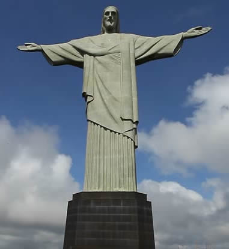

二，大勢至菩萨.......十字架

西洋教的十字架，大十字表毀滅、表死神、表大判決、表死亡。 嚴格說，人體有三個大十字。
第一個大十字，橫線位在心輪（火輪），又稱為神輪大十字。西洋的天主教信奉它。神父和修女總是用手在身上劃十字，上下左右，意為“天地保佑”，或“上帝保佑”，實際是“羅地保佑”。
這個大十字是對應宙心大十字，是表人之大靈與宙心大靈心心相應。
第二個大十字以耳位為橫線。這是生命大十字。鼻樑上端兩側的兩個點位就在這個平面上，鼻上的點位與兩個耳點 所決定的平面，稱之為“生命輪”。這個輪是中脈七輪之外的第八輪，可稱之為“命輪”。
第三個大十字橫線位在太陽穴與眉心所在的平面。這個平面叫“月臺”，其核心叫月輪。它也叫“性輪”，或叫“靈性大十字”。
如此三個大十字是
1. 心神大十字 對應 光魂
2. 生命大十字 對應 色魂
3. 靈性大十字 對應 音魂
上述三個大十字構成了人體的基本框架。即“心靈神性生命”。
人的核心。三個大十字的豎線是一條，橫線是三條，像個簡寫的“豐/丰”字。或是個“王”字
| 上 一 頁 | 下 一 頁 | 回 主 頁 |
Email: miduoyuan@126.com